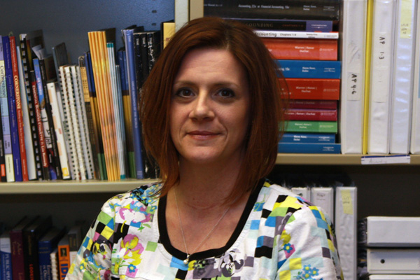

Medical Assistant
Two-Year Associate in Specialized Business (ASB) Degree Program
The Medical Assistant program at South Hills trains you to use both administrative and clinical skills in a medical setting. Students learn to perform tasks such as records management and billing as well as clinical procedures ranging from collecting specimens to administering medication (as state law permits). The specialized associate degree Medical Assistant program at the State College and Altoona campuses is accredited by the Accrediting Bureau of Health Education Schools (ABHES). Upon successful completion of the Medical Assistant program at State College or Altoona, graduates are eligible to apply to take the Certified Medical Assistant (CMA) examination.
Our MA graduates work alongside physicians, mainly in outpatient or ambulatory care facilities, such as medical offices and clinics. Other opportunities include: Electrocardiography Technician, Phlebotomist, and Emergency Department Technician.
Successful students in this program demonstrate integrity and respect and embrace change, growth, and learning.
Meet the Faculty

Crystal Douglas
MA Program Coordinator / Instructor

Pam Meister
Full-time Instructor
*The specialized associate degree Medical Assistant program at the State College and Altoona campuses is accredited by the Accrediting Bureau of Health Education Schools (ABHES). Upon successful completion of the Medical Assistant program at State College or Altoona, graduates are eligible to apply to take the Certified Medical Assistant (CMA) examination.

Upon successful completion of the Medical Assistant program at Lewistown, graduates are eligible to apply to take the Registered Medical Assistant (RMA) examination.